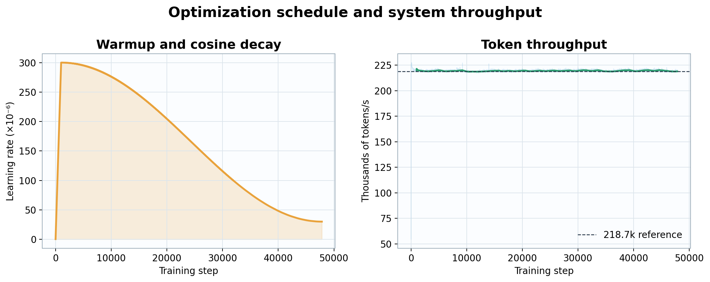
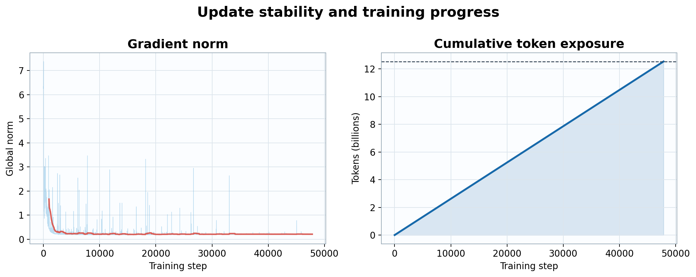
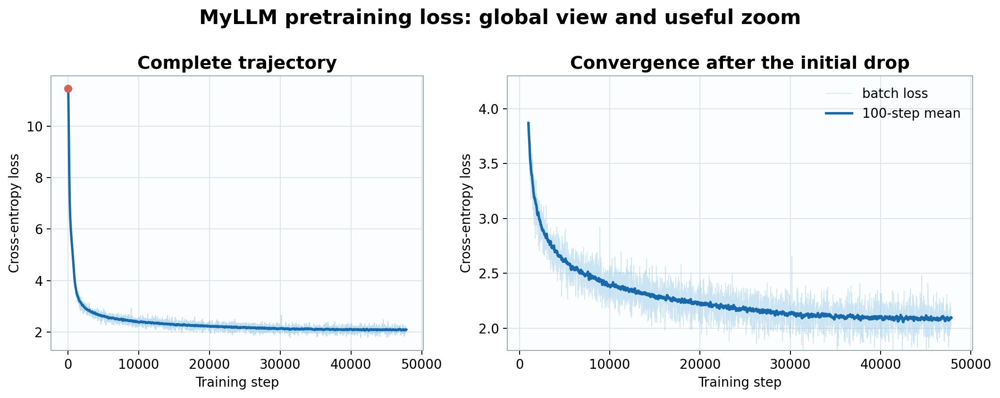

The equations in the Training chapter describe one optimizer update. Pretraining performs that update tens of thousands of times over billions of tokens. This is where a model acquires broad statistical representations of language and subject matter, and where sequence length, activation storage, optimizer state, and communication collectives become concrete systems constraints.
The central problem is efficient distributed execution: maintain high GPU utilization, prevent input-pipeline stalls, partition examples across workers, synchronize gradients, and preserve numerical stability. Throughput, memory allocation, gradient norm, learning rate, and loss are operational diagnostics. Together they reveal whether accelerator compute, HBM capacity, interconnect communication, or optimization behavior is limiting progress.
Once those constraints are explicit, we can choose the execution configuration. For example, MyLLM can be pretrained on 8 GPUs with an 8,192-token context, micro-batches of 4 sequences per GPU, no gradient accumulation, and data-parallel training.
Let \(N\) be the number of trainable parameters and \(s_w,s_g,s_m\) the bytes per weight, gradient, and optimizer-state scalar. A first-order per-replica memory model is
\[M_{\mathrm{train}}\approx Ns_w+Ns_g+kNs_m+M_{\mathrm{act}}(B_{\mu},T,L,D)+M_{\mathrm{workspace}},\]
where \(k\) counts optimizer-state tensors. With BF16 weights alone, MyLLM requires
\[1{,}055{,}231{,}744\times2\approx2.11\text{ GB}.\]
Weights are therefore not the dominant explanation for the observed 103.5 GiB peak. Long-context activations, gradients, optimizer moments, temporary attention buffers, and kernel workspaces dominate the gap.
Distributed data parallelism keeps one complete model replica on each GPU. Replicas read different samples, compute local gradients, and all-reduce those gradients before making identical updates. Tensor parallelism splits individual matrix operations; pipeline parallelism splits layers into stages. Because the 1.055B-parameter model fits within the per-GPU HBM budget, DDP is the simpler fit.
Let worker \(r\in\{1,\ldots,W\}\) process local batch \(\mathcal B_r\) of size \(B_{\mu}\). Its local gradient is
\[g_r=\frac{1}{B_{\mu}}\sum_{x\in\mathcal B_r}\nabla_\theta\ell(x;\theta).\]
An all-reduce average gives
\[\bar g=\frac{1}{W}\sum_{r=1}^{W}g_r=\frac{1}{WB_{\mu}}\sum_{r=1}^{W}\sum_{x\in\mathcal B_r}\nabla_\theta\ell(x;\theta),\]
which is exactly the gradient of the union of equally sized local batches. Each replica applies the same optimizer update and therefore remains synchronized up to numerical nondeterminism.
A ring all-reduce moves approximately
\[V_{\mathrm{comm}}\approx2\frac{W-1}{W}Ns_g\]
bytes per worker for one dense gradient tensor. With \(W=8\), \(N=1.055\)B, and two-byte communicated gradients, this is approximately 3.69 GB per worker per update. Exposed latency depends on interconnect bandwidth and how much collective communication overlaps backward computation.
The global batch is \(4\times8=32\) sequences, so
\[32\times8{,}192=262{,}144\text{ tokens per step}.\]
Larger batches reduce gradient noise and can support a larger learning rate, but activation memory constrains them. Peak allocation reached about 103.5 GiB per GPU.
In general, with micro-batch \(B_{\mu}\), worker count \(W\), and gradient accumulation \(a\),
\[B=B_{\mu}Wa,\qquad n_{\mathrm{step}}=BT.\]
Substitution gives \(B=4\cdot8\cdot1=32\) and \(n_{\mathrm{step}}=262{,}144\). Increasing \(B\) reduces stochastic-gradient variance when examples are weakly correlated, but eventually yields diminishing statistical efficiency. The systems optimum and statistical optimum need not coincide.
| Measurement | Example value |
|---|---|
| Steps | 47,837 |
| Last periodic token counter | 12,538,347,520 at logged step 47,830 |
| Nominal optimizer-step tokens | 12,540,182,528 across 47,837 full sampled batches |
| Wall time | 57,232 seconds, about 15.9 hours |
| Throughput | about 218,712 tokens per second |

Figure 1. Cosine learning-rate decay and throughput across the 47,837-step example.

Figure 2. Gradient behavior and the nearly linear accumulation of 12.54B training tokens.
The sampler draws packed sequences independently with replacement. Consequently, “one epoch” denotes the conventional step budget
\[t_{\max}=\left\lceil\frac{1{,}530{,}776}{32}\right\rceil=47{,}837,\]
not a permutation that visits each sequence exactly once. Every optimizer step uses a full batch, so the nominal number of token draws is
\[47{,}837\times262{,}144=12{,}540{,}182{,}528.\]
This exceeds the unique packed-corpus token count by 65,536, only one quarter of a global batch. The progress logger emits every ten steps; therefore, its last token counter appears at step 47,830:
\[47{,}830\times262{,}144=12{,}538{,}347{,}520.\]
The average throughput implied by all optimizer-step token draws and wall time is
\[\frac{12{,}540{,}182{,}528}{57{,}232.37}\approx219{,}110\text{ tokens/s},\]
consistent with approximately 218.7k tokens/s periodic measurements once step-time variation, checkpointing, and logging cadence are considered.
In this example, first-step loss is about 11.47, close to the random-uniform reference \(\ln(65{,}536)\approx11.09\), and the final region is approximately 2.0–2.08. A cosine schedule can warm from \(3\times10^{-7}\) to a peak near \(1.47\times10^{-4}\), then decay to \(3.0\times10^{-5}\). Flattening means each additional token yields a smaller loss reduction; it does not prove that the model has exhausted useful learning.

Figure 3. Global and zoomed views make both the initial loss collapse and later convergence visible; the dark trace is the 100-step mean.
Let \(t_w\) be the warmup length, \(t_{\max}\) the final update, \(\eta_{\max}\) the peak rate, and \(\eta_{\min}\) the terminal rate. A linear-warmup cosine schedule is
\[\eta_t=\begin{cases}\eta_{\max}t/t_w,&0\le t\le t_w,\\\eta_{\min}+\frac{1}{2}(\eta_{\max}-\eta_{\min})\left[1+\cos\!\left(\pi\frac{t-t_w}{t_{\max}-t_w}\right)\right],&t_w<t\le t_{\max}.\end{cases}\]
Warmup controls early update magnitude while optimizer moments are poorly calibrated. Cosine decay reduces stochastic motion later without an abrupt discontinuity in \(\eta_t\).
A uniform distribution over \(V\) tokens has cross-entropy \(\log V\). For \(V=65{,}536\), \(\log V=16\log2\approx11.09\). The step-one value 11.47 is consistent with near-random predictions plus finite-batch and initialization effects. A final loss near 2.08 corresponds to perplexity \(e^{2.08}\approx8.0\). Perplexity is the exponential of average log loss, not a literal support size.